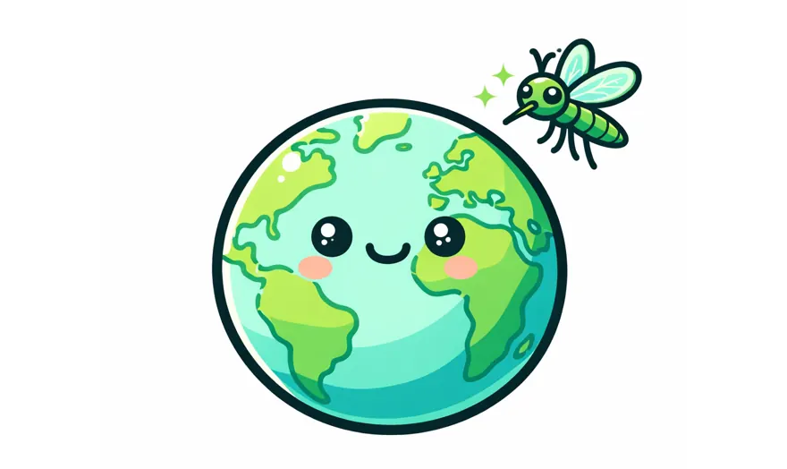
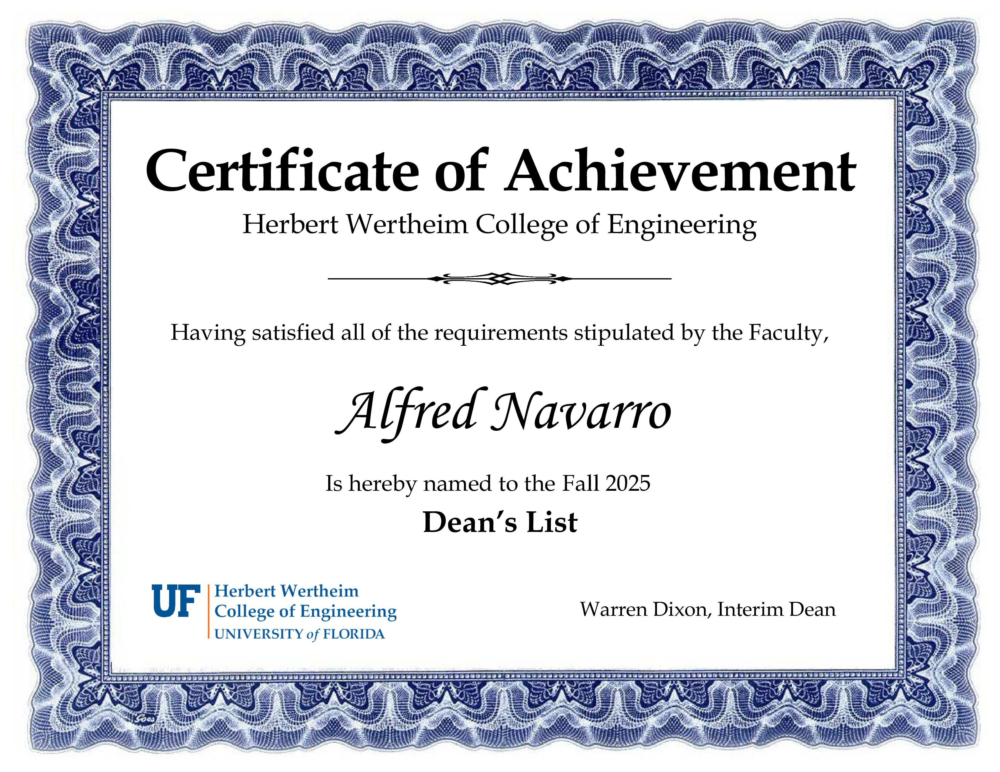
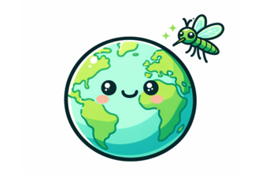
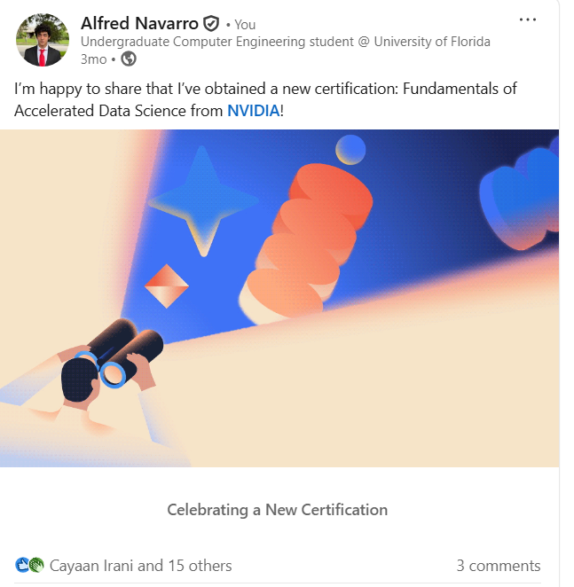

News

Now showing · Reel 01 / 07
Mosquito Tracker
1st Place, NASA geoEMERGE. Offline-first redesign of GLOBE Observer with client-side WebP compression.
Featured on NASA: Data Hackathon Inspires Community Action
NASA published an article highlighting our Mosquito Tracker team as the App Improvement Track winners of the EMERGE Data Hackathon.

UF Herbert Wertheim College of Engineering Dean's List
I'm proud to share that I've been recognized on the UF Herbert Wertheim College of Engineering Dean's List.

1st Place: NASA EMERGE Data Hackathon
Won the App Improvement Track at NASA's EMERGE Data Hackathon, building an ultra-light, offline-first enhancement to the GLOBE Observer App.
New Position: Event Coordinator
Started a new position as Event Coordinator at Data Science & Informatics at the University of Florida.
New Position: Social Chair
Started a new position as Social Chair at Southern Scholarship Foundation.
NVIDIA: Getting Started with Deep Learning
Obtained a new certification: Getting Started with Deep Learning from NVIDIA Deep Learning Institute.

NVIDIA: Fundamentals of Accelerated Data Science
Obtained a new certification: Fundamentals of Accelerated Data Science from NVIDIA.